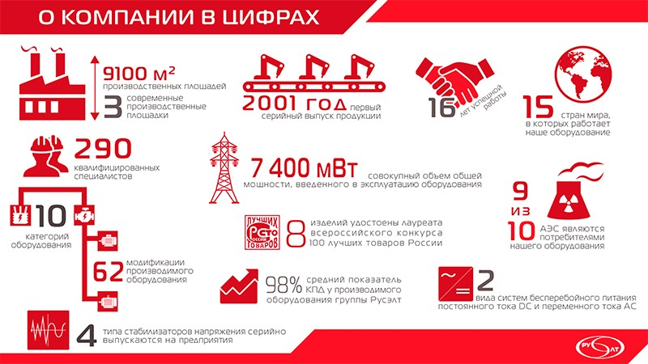
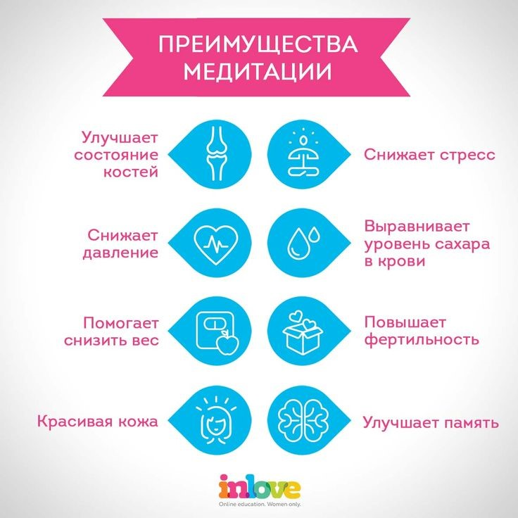

Создайте сайт, который будет соответствовать заданным характеристикам заказчика.
Инфографика — это передача информации в графическом виде. Простыми словами ее можно описать как набор картинок и других элементов, который складывается в определенную историю, инструкцию. Инфографика состоит из изображений, которые дополняются блоками, текстом, схемами, диаграммами, стрелками и т. д.
Примеры инфографики:
 
Михаил продаёт автомобили, для привлечения новых заказчиков он решил создать сайт для своей компании «CarSale». На сайте он хочет видеть 5 страниц. Необходимо, чтобы была кнопка или форма для обратной связи (номер телефона заказчика, желаемая марка автомобиля, цена, за которую заказчик готов купить автомобиль). Также Михаил хочет видеть на сайте страницу с ценами на разные марки автомобилей из его автопарка (выбирайте сами). Необходима страница с отзывами покупателей (в виде окон с именем, оценкой и текстом отзыва, отзывы переключаются между собой нажатием на стрелку). Также необходима страница с плюсами данной компании в отличии от конкурентов сделанную в виде инфографики (инфографику сделать в графическом редакторе). Ещё необходима страница с информацией о компании (дата основания, опыт работы, «призыв к действию»). В шапке и подвале сайта использовать номер телефона компании (+7 (800)-139-90-10).
Анатолий продаёт готовые ПК, для привлечения новых заказчиков он решил создать сайт для своей компании «KomPik». На сайте он хочет видеть от 5 страниц. Необходимо, чтобы была кнопка или форма для обратной связи (номер телефона заказчика, для какой сферы необходимо собрать ПК). Также Анатолий хочет видеть на сайте страницу с собранными ПК и их характеристиками (сферу, характеристики и цену ПК, выбирайте сами). Необходима страница с отзывами покупателей (в виде окон с именем, оценкой и текстом отзыва, отзывы переключаются между собой нажатием на стрелку). Также необходима страница с плюсами данной компании в отличии от конкурентов сделанную в виде инфографики (инфографику сделать в графическом редакторе). Ещё необходима страница с информацией о компании (дата основания, опыт работы, «призыв к действию»). В шапке и подвале сайта использовать номер телефона компании (+7 (800) 690-10-15).
Тоня открыла свою сеть стоматологий, для привлечения новых заказчиков она решила создать сайт для своей сети «ZubInc». На сайте он хочет видеть от 3-х до 5 страниц. Необходимо, чтобы была кнопка или форма для обратной связи (номер телефона и имя заказчика). Также Тоня хочет видеть на сайте страницу с врачами клиники и их фото. Необходима страница с отзывами покупателей (в виде окон с именем, оценкой и текстом отзыва, отзывы переключаются между собой). Необходима страница с отзывами покупателей (в виде окон с именем, оценкой и текстом отзыва, отзывы переключаются между собой нажатием на стрелку). Также необходима страница с плюсами данной клиники в отличии от конкурентов, сделанную в виде инфографики (инфографику сделать в графическом редакторе). Ещё необходима страница с информацией о компании (дата основания, опыт работы, «призыв к действию»). В шапке и подвале сайта использовать номер телефона компании (+7 (800) 231-85-79).
Захар занимается дизайном и открывает свою студию, для привлечения новых заказчиков он решила создать сайт для своей сети «Zaxa». На сайте он хочет видеть 5 страниц. Необходимо, чтобы была кнопка или форма для обратной связи (номер телефона и имя заказчика). Также Захар хочет видеть на сайте страницу с работами его студии в виде слайдера (Название компании заказчика, логотип и кнопку подробнее). Необходима страница с отзывами покупателей (в виде окон с именем, оценкой и текстом отзыва, отзывы переключаются между собой нажатием на стрелку). Также необходима страница с плюсами его студии в отличии от конкурентов, сделанную в виде инфографики (инфографику сделать в графическом редакторе). Ещё необходима страница с информацией о компании (дата основания, опыт работы, «призыв к действию»). В шапке и подвале сайта использовать номер телефона компании (+7 (800) 777-03-01).
Прислать файл Word с ссылкой на сайт до 16 февраля 2024 на почту vit200124@yandex.ru